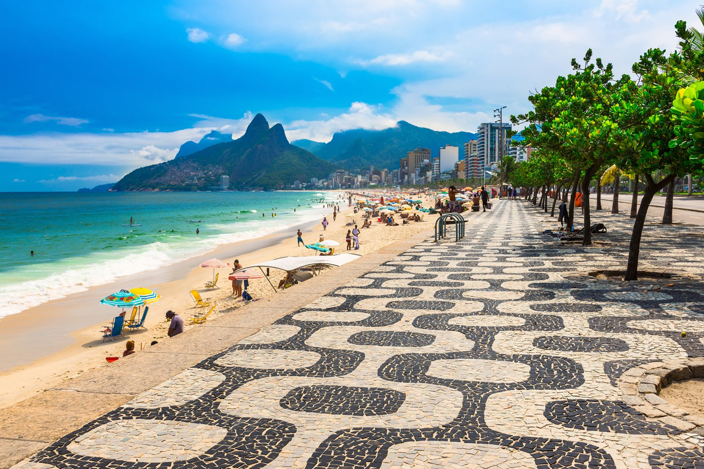
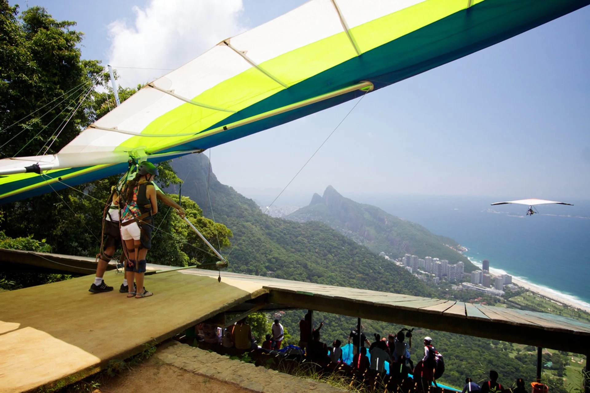
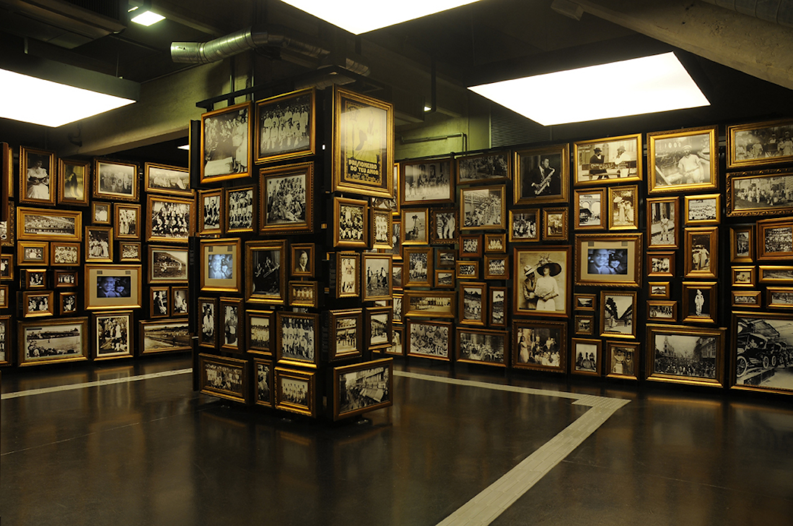
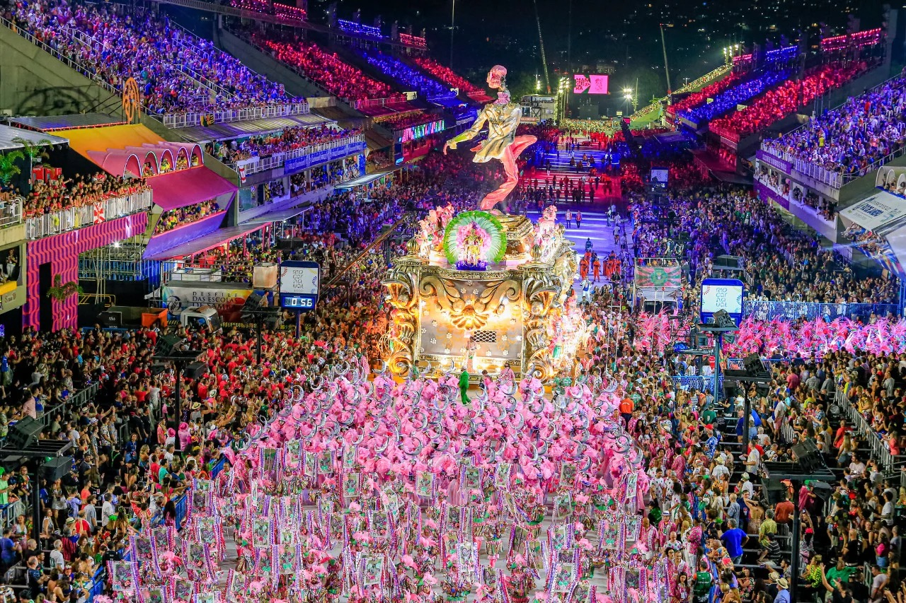
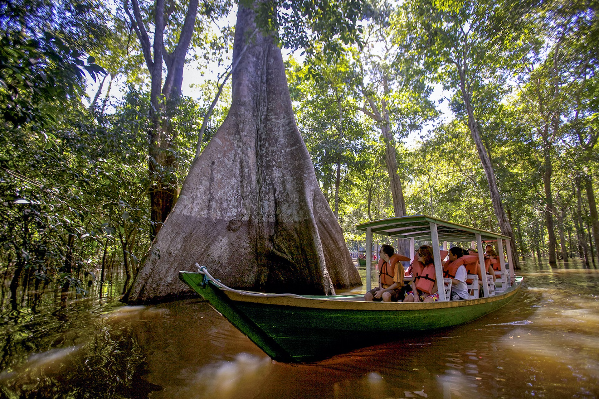
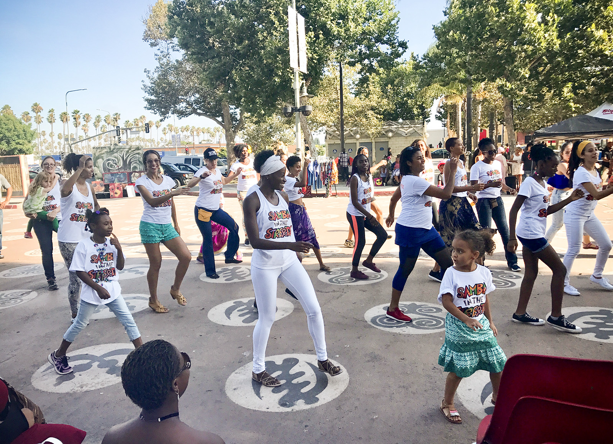
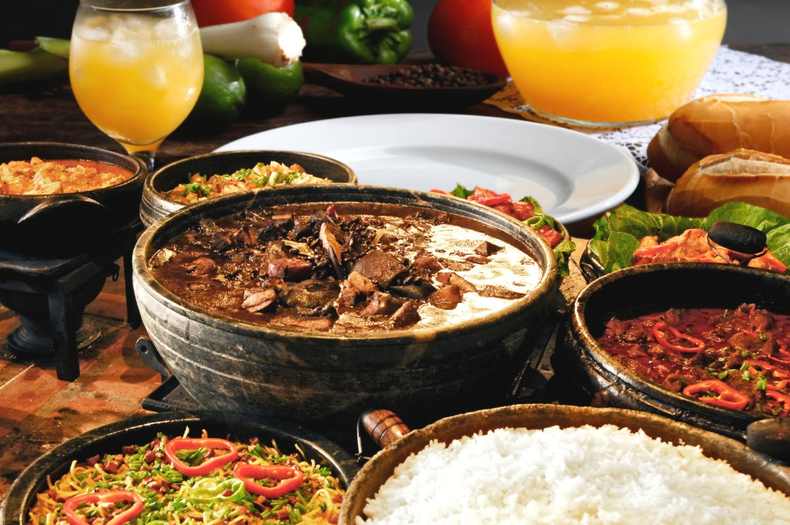
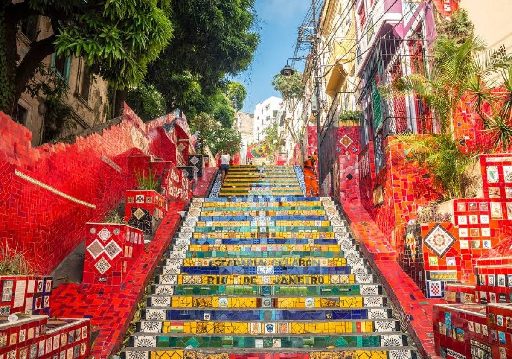

Beach Bliss in Brazil
Experience the beach vibes of Brazil,
where sun-drenched shores, turquoise waters,
and vibrant coastal culture converge to create an
idyllic haven for relaxation and adventure. Among the best beaches in
Brazil are Copacabana Beach, Ipanema Beach, and Jericoacoara
Christ the Redeemer
Embark on an exhilarating hike
to Christ the Redeemer in Rio de Janeiro,
where winding trails through Tijuca National Park
lead to awe-inspiring viewpoints. This iconic adventure
blends nature and culture, offering a rewarding journey
culminating in panoramic vistas of the city and the iconic
statue standing sentinel atop Corcovado Mountain.

Feel the Football Fever
Immerse yourself in the electric atmosphere of Brazil's most popular sport
and watch a live soccer match. This pulse-pounding experience
captures the essence of Brazillian passion and excitement. Dive into the contagious
enthusiasm and dynamic energy of the game, where every cheer, every kick, and every goal
will create lasting memories.

Hangliding in Rio
Embark on an unforgettable adventure as you
soar through the skies above Rio de Janeiro,
hang-gliding over its iconic landscapes,
including the stunning beaches and the famous
Christ the Redeemer statue, capturing
breathtaking views and a sense of exhilarating freedom.

Visit Museums
Explore Brazil's rich cultural tapestry by visiting its museums,
where artifacts, art, and history converge. From the captivating exhibits
at the Museum Oscar Niemeyer in Curitiba to the contemporary art collections
at São Paulo's Museum of Art (MASP), these cultural institutions offer
immersive journeys through Brazil's diverse heritage, showcasing a
blend of indigenous, colonial, and modern influences.
Walk Avenida Paulista
Stroll along Avenida Paulista
in the heart of São Paulo, where the bustling energy,
diverse architecture, and vibrant street life converge,
offering a dynamic urban experience with its
eclectic mix of shops, cultural venues, and a lively
atmosphere that captures the essence of Brazil's largest metropolis

Celebrate Carnival
Experience the lively enchantment of Brazil's Carnival in February,
where the streets come alive with vibrant parades,
pulsating samba beats, and elaborate costumes.
From the grand festivities in Rio de Janeiro to
the cultural tapestry of Salvador, Carnival is
a joyous celebration deeply ingrained in Brazilian
heritage, inviting locals and visitors to revel in
the spectacular fusion of music, dance, and cultural festivities.

Tour the Amazon
Discover the wonders of the Amazon through an
unforgettable tour, where dense rainforests and winding
waterways unveil a diverse array of flora and fauna.
Explore indigenous communities, witness the captivating
biodiversity, and cruise along the mighty river,
immersing yourself in the unparalleled beauty and
ecological richness of this iconic South American wilderness.

Dance Samba
Join the rhythmic celebration of Brazil by
dancing Samba, where vibrant beats and colorful
costumes come together in lively street parties and festive
gatherings. Whether participating in a Samba class in Rio de
Janeiro or engaging in spontaneous dance-offs in Salvador,
immersing yourself in the infectious energy of
Samba provides an authentic and unforgettable cultural experience

Indulge Brazillian Food
Savor the diverse and flavorful tapestry
of Brazilian cuisine as a tourist, indulging in iconic dishes
such as feijoada, a hearty black bean stew with pork, and
brigadeiro, a sweet chocolate treat. From the tantalizing s
treet food in São Paulo to the culinary delights of Bahia,
exploring Brazilian gastronomy offers a delectable journey
through the country's rich culinary traditions and regional specialties.

Climb Escadaria Selarón
Discover the vibrant and artistic charm of Rio de Janeiro,
exploring the iconic Escadaria Selarón—a mesmerizing staircase
adorned with over 2,000 colorful tiles from over 60 countries.
Located in the historic neighborhood of Santa Teresa,
this artistic masterpiece, created by the late Jorge Selarón,
invites visitors to ascend its steps and immerse themselves
in a kaleidoscope of colors, patterns, and cultural influence.